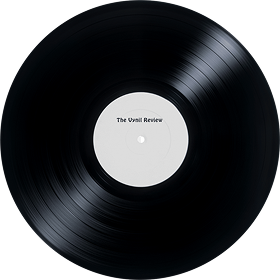
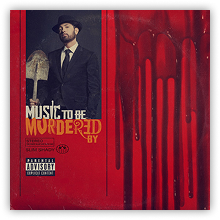
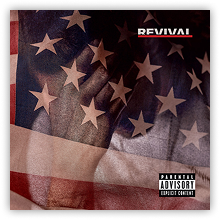
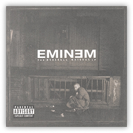
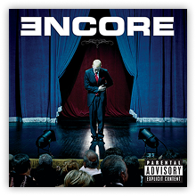
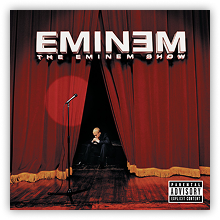
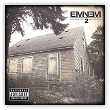
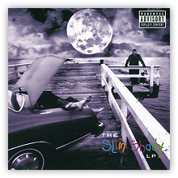

Music to Be Murdered By – Side B
Music to Be Murdered By is the eleventh studio album by American rapper Eminem. It was released on January 17, 2020, by Shady Records, Aftermath Entertainment, and Interscope Records. It was released with no prior announcement, in a similar fashion to his previous studio album Kamikaze.
Listen on SpotifyTracks
01.
Alfred
0:17
02.
Black Magic
2:54
03.
Alfred's Theme
5:39
04.
Tone Deaf
4:50
05.
Book of Rhymes
4:49
06.
Favorite Bitch
3:56
07.
Guns Blazing
3:16
08.
Gnat
3:44
09.
Higher
3:42
10.
These Demons
3:27
11.
Key
0:57
12.
She Loves Me
3:24
13.
Killer
3:15
14.
Zeus
3:50
15.
Thus Far
0:16
16.
Discombobulated
4:12
Other Albums

Music to Be Murdered By
Kamikaze

Revival

The Marshall Mathers LP
Recovery
Relapse

Encore

The Eminem Show

The Marshall Mathers LP

The Slim Shady LP